Warning: package 'tidyverse' was built under R version 4.3.3
Warning: package 'ggplot2' was built under R version 4.3.3
Warning: package 'readr' was built under R version 4.3.3
── Attaching core tidyverse packages ──────────────────────── tidyverse 2.0.0 ──
✔ dplyr 1.1.4 ✔ readr 2.1.5
✔ forcats 1.0.0 ✔ stringr 1.5.1
✔ ggplot2 3.5.1 ✔ tibble 3.2.1
✔ lubridate 1.9.3 ✔ tidyr 1.3.1
✔ purrr 1.0.2
── Conflicts ────────────────────────────────────────── tidyverse_conflicts() ──
✖ dplyr::filter() masks stats::filter()
✖ dplyr::lag() masks stats::lag()
ℹ Use the conflicted package (<http://conflicted.r-lib.org/>) to force all conflicts to become errors
mat_data <-read_csv2("student-mat.csv")
ℹ Using "','" as decimal and "'.'" as grouping mark. Use `read_delim()` for more control.
Rows: 395 Columns: 33── Column specification ────────────────────────────────────────────────────────
Delimiter: ";"
chr (17): school, sex, address, famsize, Pstatus, Mjob, Fjob, reason, guardi...
dbl (16): age, Medu, Fedu, traveltime, studytime, failures, famrel, freetime...
ℹ Use `spec()` to retrieve the full column specification for this data.
ℹ Specify the column types or set `show_col_types = FALSE` to quiet this message.
por_data <-read_csv2("student-por.csv")
ℹ Using "','" as decimal and "'.'" as grouping mark. Use `read_delim()` for more control.
Rows: 649 Columns: 33── Column specification ────────────────────────────────────────────────────────
Delimiter: ";"
chr (17): school, sex, address, famsize, Pstatus, Mjob, Fjob, reason, guardi...
dbl (16): age, Medu, Fedu, traveltime, studytime, failures, famrel, freetime...
ℹ Use `spec()` to retrieve the full column specification for this data.
ℹ Specify the column types or set `show_col_types = FALSE` to quiet this message.
two_way <-table("internet at home?"= combine_data$internet,"address"= combine_data$address)two_way
address
internet at home? R U
no 21 27
yes 46 226
three_way <-table("internet at home?"= combine_data$internet,"address"= combine_data$address,"want higher ed?"= combine_data$higher)three_way
, , want higher ed? = no
address
internet at home? R U
no 0 0
yes 3 4
, , want higher ed? = yes
address
internet at home? R U
no 21 27
yes 43 222
pre_filtered <-filter(combine_data, reason =="reputation")table("internet at home?"= pre_filtered$internet,"address"= pre_filtered$address)
address
internet at home? R U
no 3 9
yes 18 55
condition_table <-table("internet at home?"= combine_data$internet,"address"= combine_data$address,"why this school?"= combine_data$reason)condition_table[,,"reputation"]
`summarise()` has grouped output by 'reason'. You can override using the
`.groups` argument.
combine_barplot
# A tibble: 8 × 3
# Groups: reason [4]
reason address count
<fct> <fct> <int>
1 course R 28
2 course U 90
3 home R 9
4 home U 78
5 other R 9
6 other U 21
7 reputation R 21
8 reputation U 64
#stackedggplot(combine_barplot, aes(x=reason, y=count, fill=address)) +geom_bar(stat="identity") +xlab("Reason for choosing school") +ylab("Student count") +ggtitle("Reason for choosing school by Address Type") +scale_fill_discrete(name="Address", labels=c("Rural", "Urban"))
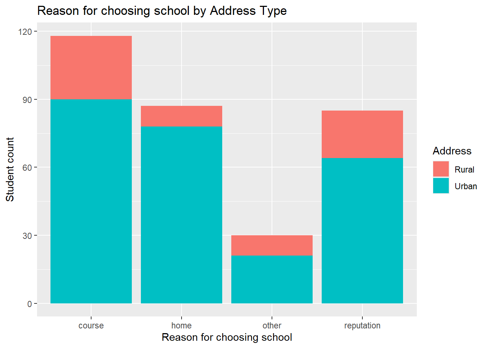
#side-by-sideggplot(combine_barplot, aes(x=reason, y=count, fill=address)) +geom_bar(stat="identity", position="dodge") +xlab("Reason for choosing school") +ylab("Student count") +ggtitle("Reason for choosing school by Address Type") +scale_fill_discrete(name="Address", labels=c("Rural", "Urban"))
#histogramsggplot(combine_data, aes(x=G3_por, fill = address)) +geom_histogram(alpha=0.3, position="identity") +ggtitle("Final Portuguese grades (G3) by Address Type") +xlab("Final Grade")
`stat_bin()` using `bins = 30`. Pick better value with `binwidth`.
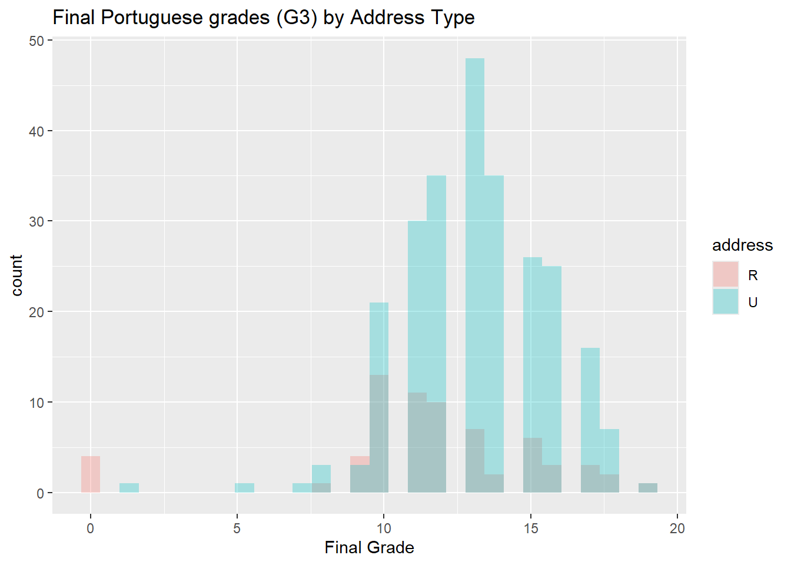
ggplot(combine_data, aes(x=G3_mat, fill = address)) +geom_histogram(alpha=0.3, position="identity") +ggtitle("Final Math grades (G3) by Address Type") +xlab("Final Grade")
`stat_bin()` using `bins = 30`. Pick better value with `binwidth`.
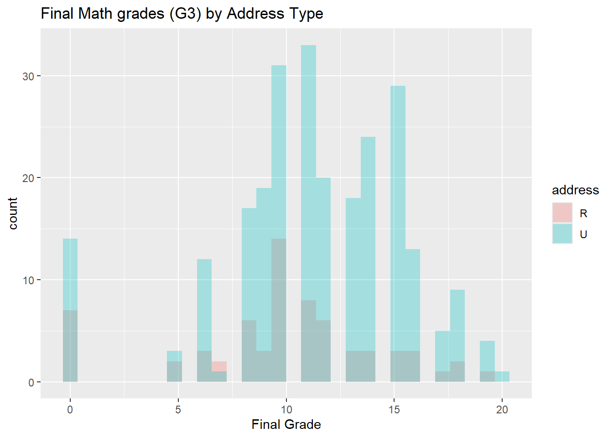
#boxplotggplot(combine_data, aes(x=G3_por, fill = address)) +geom_boxplot() +ggtitle("Final Portuguese grades (G3) by Address Type") +xlab("Final Grade")
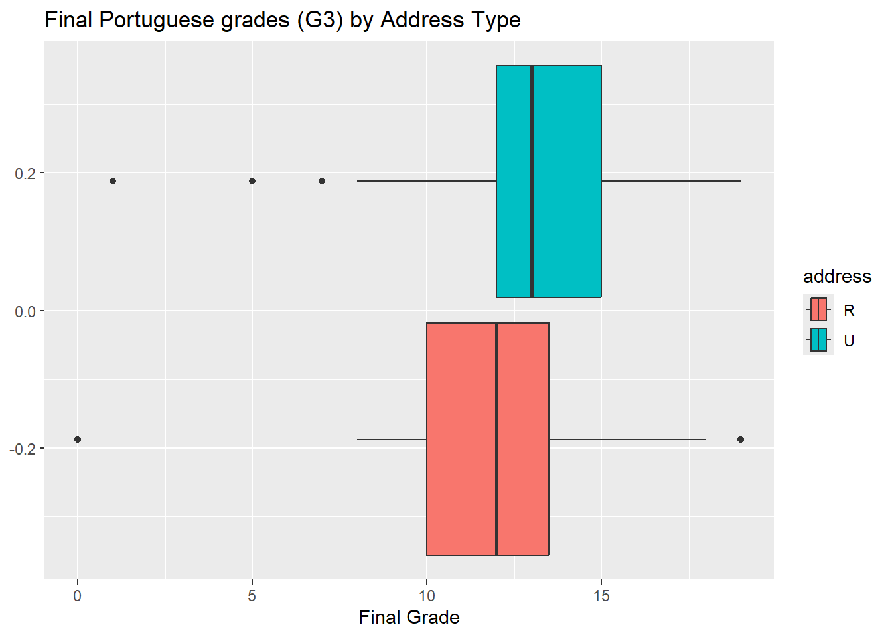
ggplot(combine_data, aes(x=G3_mat, fill = address)) +geom_boxplot() +ggtitle("Final Math grades (G3) by Address Type") +xlab("Final Grade")
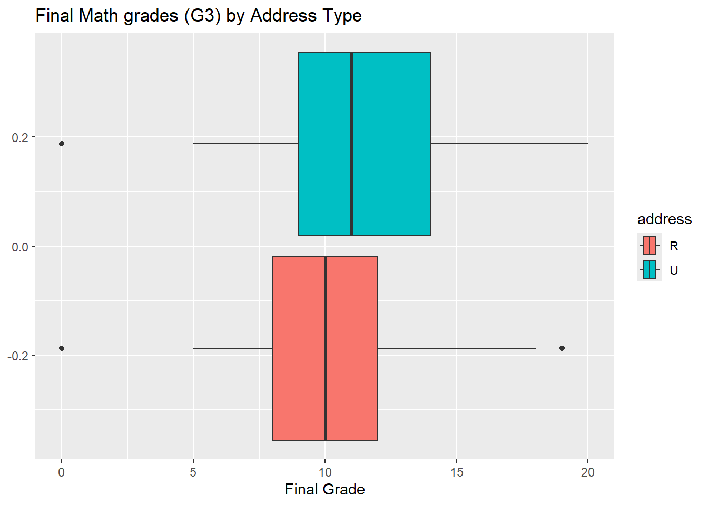
#kernel density plotggplot(combine_data, aes(x=G3_por, fill = address)) +geom_density(alpha=0.3) +ggtitle("Final Portuguese grades (G3) by Address Type") +xlab("Final Grade")
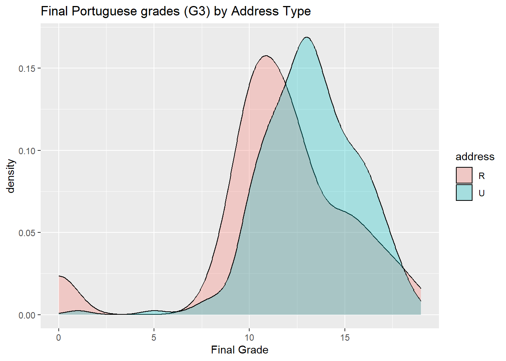
ggplot(combine_data, aes(x=G3_mat, fill = address)) +geom_density(alpha=0.3) +ggtitle("Final Math grades (G3) by Address Type") +xlab("Final Grade")
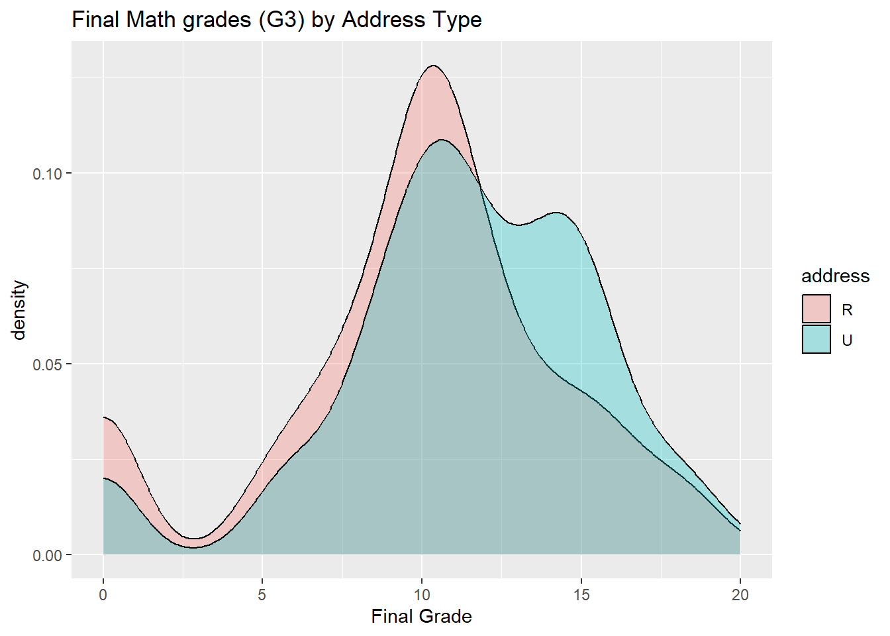
#scatter plotggplot(combine_data, aes(x=G1_mat, y=G3_mat, color = address)) +geom_jitter(alpha=0.6) +ggtitle("Final Math grades (G3) vs first-term grades (G1) by Address Type") +xlab("First term grade Grade") +ylab("Final grade")
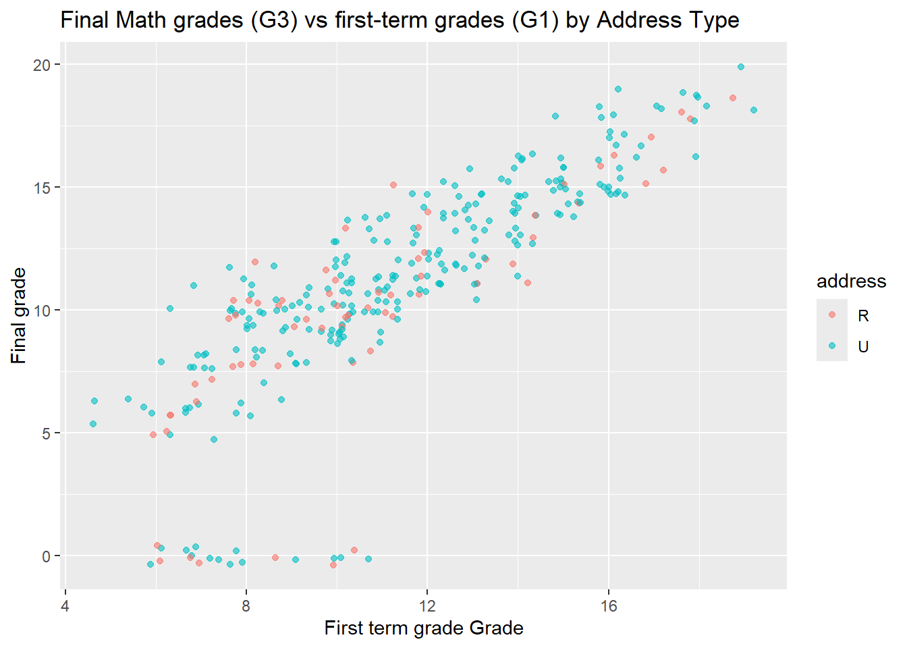
ggplot(combine_data, aes(x=G3_por, y=G3_mat, color = address)) +geom_jitter(alpha=0.6) +ggtitle("Final Math grades (G3) vs final Portuguese grades by Address Type") +xlab("First Math Grade") +ylab("Final Portuguese grade")
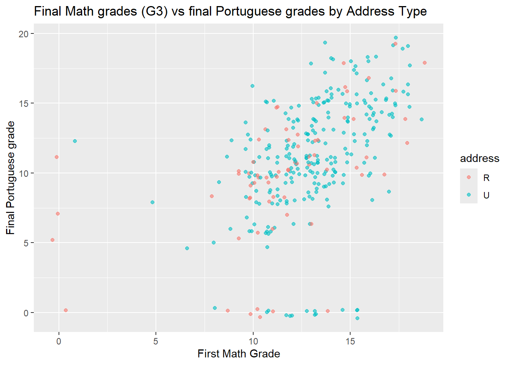
#faceting on one variableggplot(combine_data, aes(x=G1_mat, y=G3_mat)) +geom_jitter(alpha=0.6) +ggtitle("Final Math grades (G3) vs first-term grades (G1) by Address Type") +xlab("First term grade Grade") +ylab("Final grade") +facet_wrap(~ reason)
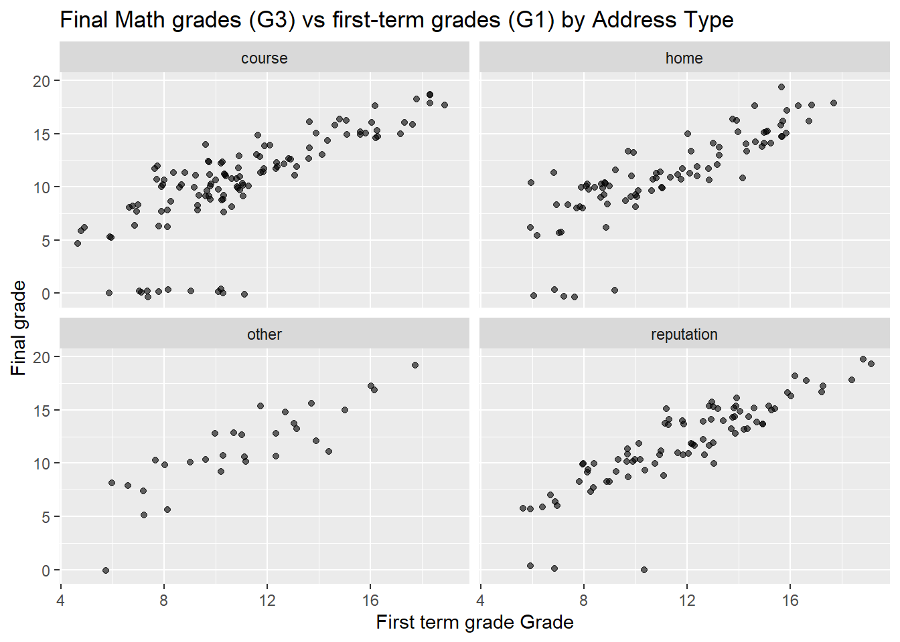
ggplot(combine_data, aes(x=G3_por, y=G3_mat)) +geom_jitter(alpha=0.6) +ggtitle("Final Math grades (G3) vs final Portuguese grades by Address Type") +xlab("First Math Grade") +ylab("Final Portuguese grade") +facet_wrap(~ reason)
#faceting on two variablesggplot(combine_data, aes(x=G1_mat, y=G3_mat)) +geom_jitter(alpha=0.6) +ggtitle("Final Math grades (G3) vs first-term grades (G1) by Address Type") +xlab("First term grade Grade") +ylab("Final grade") +facet_wrap(address ~ higher)
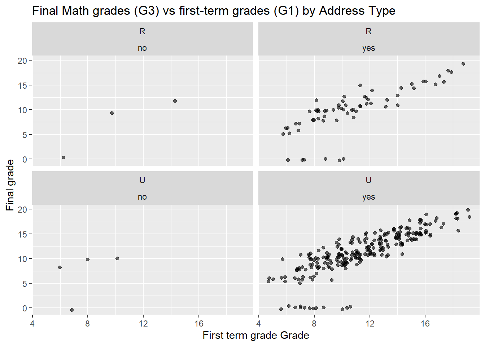
ggplot(combine_data, aes(x=G3_por, y=G3_mat)) +geom_jitter(alpha=0.6) +ggtitle("Final Math grades (G3) vs final Portuguese grades by Address Type") +xlab("First Math Grade") +ylab("Final Portuguese grade") +facet_wrap(address ~ higher)